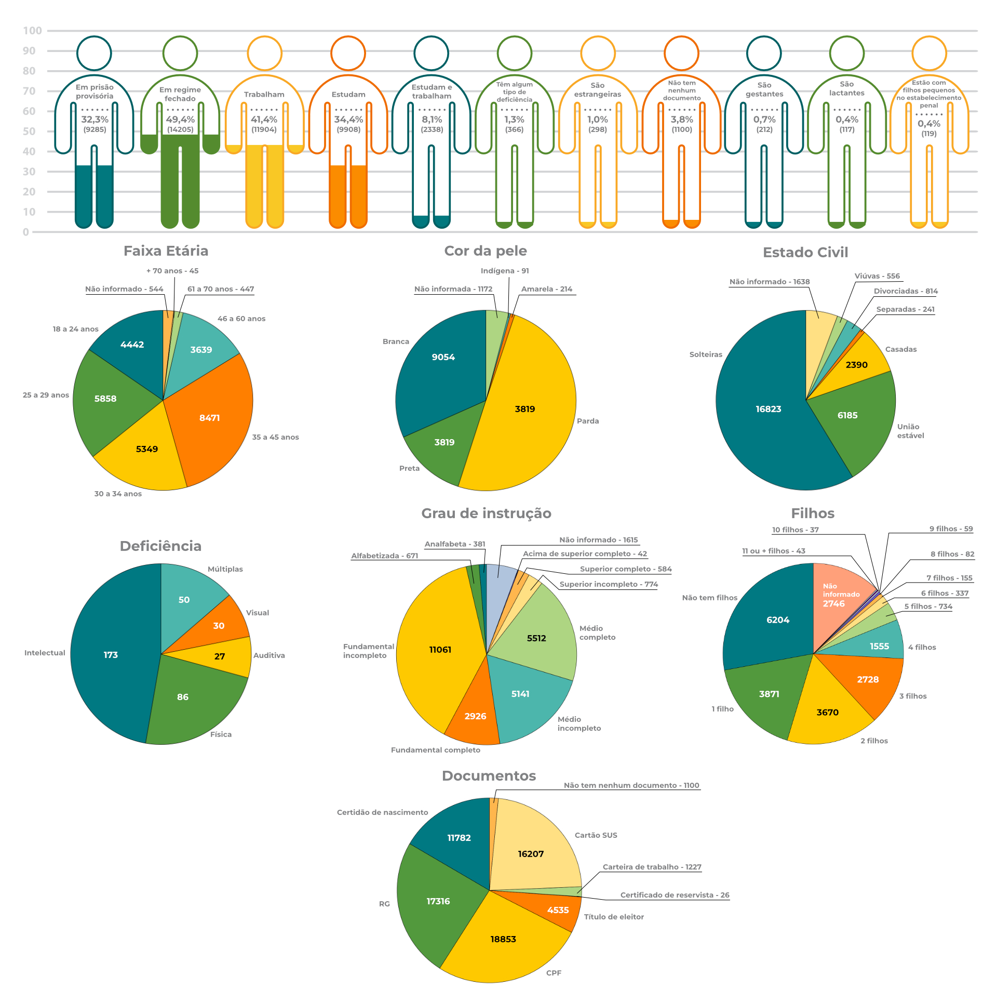
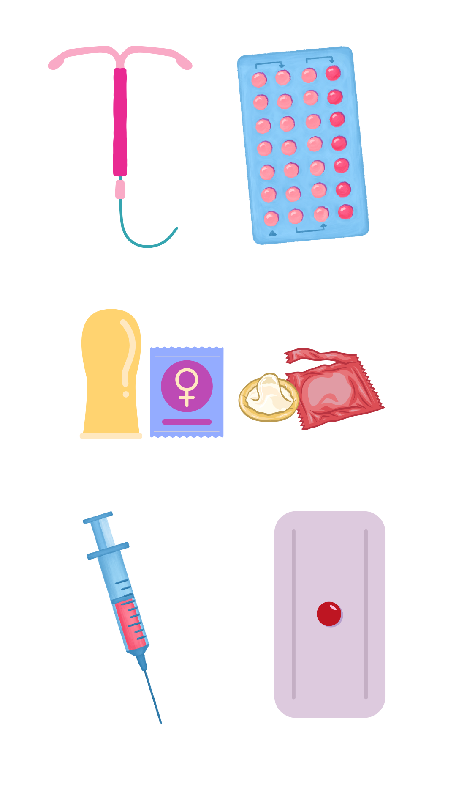

Apresentação da Unidade
Olá, estudante-trabalhador! Seja bem-vindo!
Nesta Unidade, vamos reconhecer as mulheres privadas de liberdade como sujeitos de direitos e entender como as políticas públicas podem garantir cuidado e qualidade de vida para essas mulheres. Vamos discutir a saúde sexual e reprodutiva das mulheres no sistema prisional e tratar da promoção da saúde delas e da prevenção de agravos no sistema prisional.
Bons estudos!
Objetivos de Aprendizagem da Unidade
Reconhecer os direitos sociais e a legislação vigente sobre saúde das mulheres privadas de liberdade;
Identificar aspectos referentes à saúde sexual e reprodutiva no sistema prisional e à dignidade menstrual da mulher privada de liberdade;
Listar as ações de prevenção de agravos e doenças e promoção da saúde da mulher e suas especificações no sistema prisional;
Identificar as ações de planejamento familiar para a mulher privada de liberdade;
Conhecer as principais ações de saúde relacionadas ao ciclo gravídico-puerperal no sistema prisional.
Carga Horária de Estudo: 6 horas
3.1 Direitos sociais e saúde da mulher no sistema prisional
As questões de gênero no sistema prisional são complexas e multifacetadas, envolvendo desafios específicos quando se trata de saúde da mulher. No sistema prisional brasileiro, assim como em muitos outros ao redor do mundo, as mulheres são minoria (World Prison Brief, 2024), o que pode levar à negligência de suas necessidades específicas nas políticas públicas. Conhecer o perfil das mulheres privadas de liberdade nos ajuda a pensar estratégias de cuidado direcionadas à saúde da mulher.
Você sabe quem são as mulheres privadas de liberdade no Brasil?
Considerando as celas físicas, sem os quantitativos do Sistema Penitenciário Federal, 28.770 mulheres foram privadas de liberdade no Brasil no 1º semestre de 2024, conforme a Figura 1.
Figura 1 - Caracterização das mulheres privadas de liberdade no Brasil no 1º semestre de 2024

Fonte: Brasil (2024a).As mulheres privadas de liberdade, em sua maioria, têm entre 35 e 45 anos, são mães, solteiras, pardas e com baixa escolaridade. Muitas delas não têm cartão SUS nem carteira de trabalho e outras não têm nenhum documento. O percentual de mulheres em prisão provisória supera em muito o percentual de homens em prisão provisória, que é de aproximadamente 25%. Além disso, o número de mulheres com alguma deficiência supera o número de mulheres gestantes e lactantes (Brasil, 2024a). Todos esses aspectos devem ser considerados na elaboração de políticas públicas direcionadas à garantia dos direitos sociais e de saúde das mulheres no sistema prisional.
Você conhece os direitos das mulheres privadas de liberdade?
Os direitos sociais e de saúde das mulheres privadas de liberdade são garantidos por normativas nacionais e internacionais que visam assegurar dignidade, integridade física e psicológica e acesso a condições adequadas de aprisionamento (Brasil, 1984; Brasil, 1988; United Nations, 2010). Os principais diretos das mulheres privadas de liberdade estão resumidos no Quadro 1.
Quadro 1 - Direitos das mulheres privadas de liberdade no Brasil
- Não ser discriminadas com base em gênero, raça/cor, religião ou outra condição;
- Ter proteção contra qualquer forma de violência, abuso, assédio sexual e maus-tratos;
- Ter as revistas íntimas respeitadas, realizadas preferencialmente por agente do mesmo sexo e sem exposições desnecessárias;
- Ser alojadas em celas separadas dos homens, com banheiro, cama e espaços de convivência exclusivos;
- Ter sua privacidade respeitada, especialmente durante o banho e o uso do banheiro;
- Ter acesso a cuidados de saúde e assistência médica, incluindo consulta ginecológica, exames preventivos (como papanicolau) e acompanhamento durante a gravidez, parto e puerpério;
- Não ser algemada durante o trabalho de parto;
- Ter progressão para o regime aberto se estiver grávida, tiver filho de até 12 anos ou for responsável por pessoa com deficiência;
- Receber visitas de familiares, amamentar o filho e ter sua solicitação atendida caso peça transferência para unidades especiais, que oferecem condições para cuidar dos filhos;
- Ter acesso a produtos de higiene, como absorventes e sabonetes. Fonte: elaboração das autoras com base em Brasil (1984, 1988) e United Nations (2010).
Em 2014, a Secretaria Nacional de Políticas Penais (SENAPPEN) apresentou a Política Nacional de Atenção às Mulheres em Situação de Privação de Liberdade e Egressas do Sistema Prisional (PNAMPE) com o objetivo de atender demandas específicas dessa população. A confecção dos Planos Estaduais configura-se como oportunidade de aproximar as políticas do sistema prisional às particularidades das mulheres privadas de liberdade e de assegurar o cuidado direcionado à saúde da mulher no sistema prisional (Brasil, 2014).
No Rio Grande do Sul (RS), o processo de construção coletiva da política de atenção às mulheres privadas de liberdade, por meio do Plano Estadual, ensejou a criação do Comitê Gestor Interinstitucional instituído via Decreto Estadual nº 56.220, de 2021, com o objetivo de ser o responsável pela implantação, aperfeiçoamento e capilaridade estadual da política de atenção às mulheres. Entre as atribuições do Comitê, está o fortalecimento das ações articuladas com diversos órgãos estaduais dos Poderes Executivo e Judiciário para elaboração e aplicação de políticas voltadas à saúde, à educação e ao trabalho das mulheres privadas de liberdade e egressas do sistema prisional (Rio Grande do Sul, 2021).
O Plano Estadual de Atenção às Mulheres Privadas de Liberdade e Egressas do Sistema Prisional do Estado do Rio Grande do Sul, que inicialmente tinha previsão de atuação para o biênio 2022/2023, teve sua versão e vigência atualizadas para o triênio 2024/2027 e tem por finalidade acolher integralmente as diretrizes da PNAMPE, bem como estabelecer diretrizes próprias de atuação, levando em consideração as peculiaridades locais (Rio Grande do Sul, 2024a).
Além disso, é importante que, na elaboração de políticas públicas para mulheres privadas de liberdade e egressas do sistema prisional, sejam consideradas também as questões familiares, como apresentado no relato de experiência de Pereira (2016) sobre o Distrito Federal.
3.2 Saúde sexual e reprodutiva da mulher no sistema prisional
De acordo com Brasil (2025a),
a saúde sexual diz respeito à possibilidade de mulheres e homens, ao longo de suas vidas, vivenciarem e expressarem sua sexualidade de maneira saudável, evitando riscos como infecções sexualmente transmissíveis, gestações não planejadas, coerção, violência e discriminação. A saúde sexual valoriza a vida, as relações pessoais e a expressão genuína de quem somos. Ela é enriquecedora, inclui o prazer e incentiva a autoconfiança e a comunicação nas relações (Brasil, 2025a).
Apesar de as normativas legais garantirem direitos, a saúde sexual e reprodutiva das mulheres no sistema prisional é um tema crítico, que envolve múltiplas questões intersetoriais, incluindo direitos humanos, saúde pública e políticas voltadas ao sistema prisional. De acordo com Schultz et al. (2020) e Prado (2024), estas são algumas dificuldades que as mulheres encontram no sistema prisional e que representam desafios aos profissionais desses locais:
Clique para interagir
3.3 Como podemos promover a saúde da mulher e prevenir agravos no sistema prisional?
Para promover a saúde da mulher e prevenir agravos no sistema prisional, são necessárias estratégias robustas e ações direcionadas. Nesta seção, relacionamos ações e estratégias necessárias para ampliação do atendimento ginecológico e obstétrico e tratamos da disponibilização de contraceptivos e absorventes de forma gratuita, da garantia de pré-natal e parto humanizado e da fiscalização e do cumprimento das normas existentes.
3.3.1 Ampliação do atendimento ginecológico e obstétrico
De acordo com a Política Nacional de Atenção Integral à Saúde das Pessoas Privadas de Liberdade no Sistema Prisional (PNAISP), a equipe de Atenção Primária Prisional (eAPP) precisa ser integrada por um médico generalista, uma vez que não se exige um médico ginecologista nas instituições penais femininas. Dessa forma, torna-se relevante a capacitação da eAPP para atendimento das questões referentes à saúde da mulher, considerando idade reprodutiva, climatério e prevenção de agravos crônicos e degenerativos. Torna-se igualmente importante a implementação de programas de educação sexual e reprodutiva voltados para mulheres privadas de liberdade.
Conheça as principais infecções ginecológicas e sexualmente transmissíveis e os meios de prevenção no sistema prisional no Quadro 2 (Brasil, 2016).
Quadro 2 - Prevenção das infecções ginecológicas e sexualmente transmissíveis no sistema prisional
Clique para interagir
Causada pelo fungo Candida albicans, que se prolifera na falta de higiene, uso prolongado de roupas úmidas, alimentação pobre em nutrientes e estresse.
Prevenção:
- Higiene e limpeza - celas, galerias e pátio devem ter condições mínimas de limpeza e higiene, e a mulher deve ter acesso a banho diariamente e a itens de higiene, como absorventes.
Causada pela bactéria Gardnerella vaginalis, que se desenvolve em ambiente de desequilíbrio da flora vaginal por falta de higiene, baixa imunidade e estresse.
Prevenção:
- Prevenção: - celas, galerias e pátio devem ter condições mínimas de limpeza e higiene, e a mulher deve ter acesso a banho diariamente e a itens de higiene, como absorventes.
Causada pelo protozoário Trichomonas vaginalis, transmitida principalmente por relações sexuais desprotegidas.
Prevenção:
- Prevenção: - celas, galerias e pátio devem ter condições mínimas de limpeza e higiene, e a mulher deve ter acesso a banho diariamente e a itens de higiene, como absorventes.
Causado pelo papilomavírus humano, pode causar verrugas genitais e está associado ao câncer de colo de útero. Os fatores de risco são: relações sexuais desprotegidas, múltiplos parceiros sexuais e ausência de exame preventivo (papanicolau).
Prevenção:
- Uso de preservativo masculino ou feminino e gel lubrificante em todas as relações sexuais;
- Realizar o exame papanicolau (preventivo) conforme protocolo do Instituto Nacional de Câncer (INCA)/Ministério da Saúde protocolo do Instituto Nacional de Câncer (INCA)/Ministério da Saúde;
- Vacinação contra HPV, que está disponível no SUS para meninos e meninas de 9 a 14 anos e usuárias de Profilaxia Pré-Exposição (PrEP) com idade inferior a 45 anos.
São ISTs transmitidas pelas bactérias Neisseria gonorrhoeae e Chlamydia trachomatis.
Prevenção:
- Uso de preservativo masculino ou feminino e gel lubrificante em todas as relações sexuais;
Causada pela bactéria Treponema pallidum e transmitida principalmente por relação sexual desprotegida.
Prevenção:
- Uso de preservativo masculino ou feminino e gel lubrificante em todas as relações sexuais;
IST transmitida pelo vírus HIV e pelo compartilhamento de materiais contaminados (como materiais utilizados para fazer tatuagens).
Prevenção:
- Uso de preservativo masculino ou feminino e gel lubrificante em todas as relações sexuais;
- Orientação para não compartilhar itens pessoais, como materiais de manicure, pedicure e tatuagens, pinças, lixa de unha e aparelho de barbear;
- Disponibilização da PrEP e da Profilaxia Pós-Exposição (PEP) para HIV conforme protocolos do Ministério da Saúde;
- Prevenção combinada.
Causada pelo vírus HBV, é transmitida por relação sexual desprotegida e contato com sangue contaminado.
Prevenção:
- Uso de preservativo masculino ou feminino e gel lubrificante em todas as relações sexuais;
- Orientação para não compartilhar itens pessoais, como materiais de manicure, pedicure e tatuagens, pinças, lixa de unha e aparelho de barbear;
- Vacinação contra a hepatite B conforme protocolo do Ministério da Saúde.
Causada pelo vírus HCV, é transmitida principalmente pelo compartilhamento de materiais contaminados, incluindo os materiais utilizados para manicure e pedicure.
Prevenção:
- Orientação para não compartilhar itens pessoais, como materiais de manicure, pedicure e tatuagens, pinças, lixa de unha e aparelho de barbear.
Causada pelo herpes vírus simples, é transmitida principalmente por contato sexual.
Prevenção:
- Uso de preservativo masculino ou feminino e gel lubrificante em todas as relações sexuais.
Clique nos termos em destaque da coluna Prevenção para saber mais.
Além das medidas específicas de prevenção para cada uma das doenças infecciosas e ISTs, você precisa estar atento às seguintes questões para propor ações que irão colaborar com a promoção da saúde das mulheres nas instituições penais:
- Educação sexual, que envolve questões de gênero e autocuidado;
- Disponibilização de exames preventivos e testes rápidos para HIV, sífilis e hepatites virais no momento do ingresso no sistema prisional e posteriormente, no mínimo uma vez ao ano;
- Disponibilização de preservativos nas visitas íntimas e em locais estratégicos;
- Orientação quanto à automedicação, principalmente de antibióticos que desregulam a flora vaginal e predispõem a infecções;
- Combate à violência sexual intra e extramuros;
- Ações de redução de danos.
Você também precisa desenvolver ações de promoção da saúde no ambiente prisional que possam melhorar a qualidade de vida dessas mulheres. Alimentação saudável, organização de uma horta, atividades físicas no horário do banho de sol são algumas das possibilidades exequíveis nesse contexto. Quando a mulher é gestante e é diagnosticada com uma ou mais infecções, é de fundamental importância identificar os riscos de transmissão vertical, ou seja, de transmissão da mãe para o recém-nascido durante a gestação, parto e amamentação, e instituir o tratamento imediatamente.
Clique para interagir
3.3.2 Disponibilização de contraceptivos e absorventes de forma gratuita
As orientações sobre planejamento familiar e a disponibilização de contraceptivos devem considerar a orientação sexual, expressão e identidade de gênero, religião, especificidades étnico-raciais e livre exercício da sexualidade. Os profissionais da saúde devem prestar todas as informações necessárias para que a mulher possa escolher de forma consciente os melhores métodos para evitar a gestação indesejada e as ISTs.
A Política Nacional de Atenção Integral à Saúde da Mulher (PNAISM) prevê a ampliação do acesso à saúde de todas as mulheres brasileiras, incluindo o acesso aos métodos contraceptivos disponibilizados pelo SUS (Brasil, 2011). As mulheres privadas de liberdade também fazem parte deste escopo, e os contraceptivos devem ser disponibilizados inclusive no puerpério. O método de escolha depende do histórico clínico e ginecológico da mulher. Geralmente, recomenda-se um método farmacológico associado a um método de barreira, como preservativo masculino ou feminino, para dupla proteção, conforme Figura 2 (Rio Grande do Sul, 2024b).
Figura 2 - Métodos contraceptivos disponibilizados pelo SUS
(clique nos ícones de + para acessar o conteúdo)
Fonte: Brasil (2024a).Trabalhar com mulheres privadas de liberdade exige estar atento às questões que dizem respeito à vida das mulheres. Entre elas, está a pobreza menstrual, que é a falta de acesso aos absorventes, banheiros e água para a realização da higiene pessoal, o que pode representar riscos para a saúde. Na falta de absorventes higiênicos, as mulheres utilizam materiais improvisados, como tiras de roupas, meias, miolo de pão e jornal, para conter o fluxo. O resultado dessa prática é a exposição da mulher a alergias e doenças, como candidíase, infecções urinárias de repetição e vaginoses bacterianas (UNICEF, 2021).
3.3.3 Garantia de acompanhamento pré-natal e parto humanizado, sem uso de algemas
O pré-natal de risco habitual deve ser realizado pela eAPP quando a instituição penal dispõe de equipe de saúde intramuros e pela Estratégia Saúde da Família (ESF) do território quando não há equipe de saúde na instituição penal.
As consultas de pré-natal seguem as diretrizes do pré-natal de risco habitual da Atenção Primária à Saúde (APS), que preconiza um número mínimo de seis consultas: mensais até a 28ª semana, quinzenais até a 36ª semana e semanais até o parto. As consultas podem ser intercaladas entre médico e enfermeiro. Quando a gestante for encaminhada ao pré-natal de alto risco, deve manter o vínculo com a APS ou eAPP, com cuidados compartilhados.
É necessário conhecer a RAS, os serviços de referência para intercorrências da gestação e as formas de deslocamento. Os servidores das instituições penais devem ser orientados pela equipe de saúde sobre os sinais de alerta e de trabalho de parto que precisam ser encaminhados para avaliação hospitalar (Rio Grande do Sul, 2024b).
Durante a internação hospitalar para o parto, a mulher privada de liberdade não deve ser algemada em nenhum momento (Brasil, 2017). Nos períodos de pré-parto, parto e pós-parto, a mulher privada de liberdade tem direito a um acompanhante, da mesma forma que as mulheres em situação de liberdade (Brasil, 2005).
3.3.4 Fortalecimento da fiscalização e cumprimento das normas existentes
O tema exige atenção para garantir que os direitos humanos, sociais e de saúde das mulheres privadas de liberdade sejam respeitados e que elas possam ter acesso a cuidados de saúde dignos. As instituições penais e de saúde devem enfrentar o racismo, respeitar especificidades étnico-raciais e de gênero e dar apoio às mulheres quando identificarem vulnerabilidades socioemocionais. O racismo institucional e a violência de gênero devem ser combatidos, denunciados e fiscalizados.
A fiscalização e o cumprimento das normas no sistema prisional são garantidos por diferentes órgãos e mecanismos, como o Ministério Público, o Conselho Nacional de Justiça (CNJ), o Conselho Nacional do Ministério Público (CNMP) e a Secretaria Nacional de Políticas Penais (SENAPPEN).
No âmbito do sistema prisional, os Conselhos da Comunidade representam as forças locais institucionais e da comunidade prisional. Entre as atribuições dos Conselhos da Comunidade, estão as ações de integração com os serviços de saúde e o apoio à reinserção social dos egressos (Allgayer et al., 2022). Os Conselhos da Comunidade também buscam trabalhar ações de apoio à família da pessoa privada de liberdade (PPL), promover acesso às políticas públicas e fiscalizar o cumprimento das normas existentes.
Reflexão
Você conhece o Conselho da Comunidade da sua Comarca? Participou de alguma reunião do Conselho da Comunidade? Quem são os representantes dos trabalhadores da segurança pública, da justiça e da saúde no Conselho da Comunidade da sua região?
Encerramento da Unidade
Nesta Unidade, você aprendeu sobre os direitos das mulheres privadas de liberdade, refletiu sobre a saúde sexual e reprodutiva, conheceu ações voltadas para a prevenção de agravos e para a promoção da saúde e descobriu detalhes sobre planejamento familiar, dignidade menstrual e ciclo gravídico-puerperal no sistema prisional.
Referências importantes
BRASIL. Ministério da Justiça e Segurança Pública. Portaria Interministerial nº 210, de 16 de janeiro de 2014. Institui a Política Nacional de Atenção às Mulheres em Situação de Privação de Liberdade e Egressas do Sistema Prisional, e dá outras providências. Diário Oficial da União, Brasília, DF, 17 jan. 2014. Disponível em: https://dspace.mj.gov.br/bitstream/1/361/3/PRI_GM_2014_210.html . Acesso em: 11 set. 2025.
RIO GRANDE DO SUL. Saúde da mulher privada de liberdade: pré-natal, parto e puerpério. Porto Alegre: SES/RS, 2024b.
SCHULTZ, A. L. V. et al. Limites e desafios para o acesso das mulheres privadas de liberdade e egressas do sistema prisional nas Redes de Atenção à Saúde. Physis: Revista de Saúde Coletiva, v. 30, n. 3, e300325, 2020. Disponível em: https://dspace.mj.gov.br/bitstream/1/361/3/PRI_GM_2014_210.html . Acesso em: 31 jul. 2025.
UNITED NATIONS. United Nations Rules for the Treatment of Women Prisoners and Non-custodial Measures for Women Offenders (the Bangkok Rules). Genebra, 2010. Disponível em: https://www.ohchr.org/en/instruments-mechanisms/instruments/united-nations-rules-treatment-women-prisoners-and-non-custodial . Acesso em: 31 ago. 2025.
Referências
ALLGAYER, M. F. et al. Conselhos da comunidade: controle social e interlocução para a saúde prisional. Revista Brasileira de Segurança, v. 16, n. 2, p. 122-137, 2022. Disponível em: https://revista.forumseguranca.org.br/index.php/rbsp/article/view/1340 . Acesso em: 31 jul. 2025.
BRASIL. Ministério da Saúde. Saúde da Mulher. gov.br, 2025a. Disponível em: https://www.gov.br/saude/pt-br/assuntos/saude-de-a-a-z/s/saude-da-mulher . Acesso em: 31 jul. 2025.
BRASIL. Ministério da Saúde. Prevenção Combinada. 2025b. Disponível em: https://www.gov.br/aids/pt-br/assuntos/prevencao-combinada . Acesso em: 31 ago. 2025.
BRASIL. Ministério da Saúde. Calendário de Vacinação. Brasília: Ministério da Saúde, c2025c. Disponível em: https://www.gov.br/saude/pt-br/vacinacao/calendario . Acesso em: 11 set. 2025.
BRASIL. Secretaria Nacional de Políticas Penais. Relatório de Informações Penais. 16º ciclo SISDEPEN, 1º semestre de 2024. RELIPEN. Brasília: SENAPPEN, 2024a. Disponível em: https://www.gov.br/senappen/pt-br/servicos/sisdepen/relatorios/relipen/relipen-1o-semestre-de-2024.pdf . Acesso em: 11 set. 2025.
BRASIL. Ministério da Saúde. Protocolo clínico e diretrizes terapêuticas para Profilaxia Pós-Exposição (PEP) de risco à infecção pelo HIV, ISTs e hepatites virais. Brasília: Ministério da Saúde, 2024b. Disponível em: https://www.gov.br/aids/pt-br/central-de-conteudo/pcdts/2021/hiv-aids/prot_clinico_diretrizes_terap_pep_-risco_infeccao_hiv_ist_hv_2021.pdf . Acesso em: 11 set. 2025.
BRASIL. Ministério da Saúde. Secretaria de Atenção Primária à Saúde (SAPS). Diretoria-Geral do Sistema de Informação em Saúde (DGCI). Nota Técnica Conjunta nº 220/2024 - DGCI/SAPS/MS DAHU/SAES/ME. Brasília, DF, 27 nov. 2024c. Disponível em: https://www.gov.br/saude/pt-br/centrais-de-conteudo/publicacoes/notas-tecnicas/2024/nota-tecnica-conjunta-no-220-2024-dgci-saps-ms-e-dahu-saes-ms.pdf/view . Acesso em: 31 jul. 2025.
BRASIL. Ministério da Saúde. Rede Alyne: conheça a história da jovem negra que deu nome ao novo programa de cuidado integral à gestante e bebê. gov.br, 20 set. 2024d. Disponível em: https://www.gov.br/saude/pt-br/assuntos/noticias/2024/setembro/rede-alyne-conheca-a-historia-da-jovem-negra-que-deu-nome-ao-novo-programa-de-cuidado-integral-a-gestante-e-bebe . Acesso em: 31 jul. 2025.
BRASIL. Ministério da Saúde. Programa Dignidade Menstrual: um ciclo de respeito. Brasília: Ministério da Saúde, 2024e. Disponível em: https://www.gov.br/saude/pt-br/centrais-de-conteudo/publicacoes/cartilhas/2024/dignidademenstrual . Acesso em: 31 jul. 2025.
BRASIL. Ministério da Saúde. Protocolo clínico e diretrizes terapêuticas para Profilaxia Pré-Exposição (PrEP) de risco à infecção pelo HIV. Brasília: Ministério da Saúde, 2022. Disponível em: https://bvsms.saude.gov.br/bvs/publicacoes/protocolo_clinico_profilaxia_prep.pdf . Acesso em: 11 set. 2025.
BRASIL. Lei nº 13.769, de 19 de dezembro de 2018. Altera o Decreto-Lei nº 3.689, de 3 de outubro de 1941 (Código de Processo Penal), as Leis nº 7.210, de 11 de julho de 1984 (Lei de Execução Penal), e 8.072, de 25 de julho de 1990 (Lei dos Crimes Hediondos), para estabelecer a substituição da prisão preventiva por prisão domiciliar da mulher gestante. Diário Oficial da União, Brasília, DF, 20 dez. 2018. Disponível em: https://www.planalto.gov.br/ccivil_03/_ato2015-2018/2018/lei/l13769.htm . Acesso em: 31 jul. 2025.
BRASIL. Lei nº 13.434, de 12 de abril de 2017. Acrescenta parágrafo único ao art. 292 do Decreto-Lei nº 3.689, de 3 de outubro de 1941 (Código de Processo Penal), para vedar o uso de algemas em mulheres grávidas durante o parto e em mulheres durante a fase de puerpério imediato. Diário Oficial da União, Brasília, DF, 13 abr. 2017. Disponível em: https://www.planalto.gov.br/ccivil_03/_ato2015-2018/2017/lei/l13434.htm . Acesso em: 31 jul. 2025.
BRASIL. Ministério da Saúde. Protocolos da Atenção Básica: saúde das mulheres. Brasília: Ministério da Saúde, 2016. Disponível em: https://bvsms.saude.gov.br/bvs/publicacoes/protocolos_atencao_basica_saude_mulheres.pdf . Acesso em: 31 jul. 2025.
BRASIL. Ministério da Justiça e Segurança Pública. Portaria Interministerial nº 210, de 16 de janeiro de 2014. Institui a Política Nacional de Atenção às Mulheres em Situação de Privação de Liberdade e Egressas do Sistema Prisional, e dá outras providências. Diário Oficial da União, Brasília, DF, 17 jan. 2014. Disponível em: https://dspace.mj.gov.br/bitstream/1/361/3/PRI_GM_2014_210.html . Acesso em: 11 set. 2025.
BRASIL. Ministério da Saúde. Secretaria de Atenção à Saúde. Departamento de Ações Programáticas Estratégicas. Política Nacional de Atenção Integral à Saúde da Mulher: Princípios e Diretrizes. Brasília: Editora do Ministério da Saúde, 2011. Disponível em: https://bvsms.saude.gov.br/bvs/publicacoes/politica_nacional_mulher_principios_diretrizes.pdf . Acesso em: 31 ago. 2025.
BRASIL. Lei nº 11.108, de 7 de abril de 2005. Altera a Lei nº 8.080, de 19 de setembro de 1990, para garantir às parturientes o direito à presença de acompanhante durante o trabalho de parto, parto e pós-parto imediato, no âmbito do Sistema Único de Saúde - SUS. Diário Oficial da União, Brasília, DF, 8 abr. 2005. Disponível em: https://www.planalto.gov.br/ccivil_03/_ato2004-2006/2005/lei/l11108.htm . Acesso em: 31 jul. 2025.
BRASIL. Constituição (1988). Constituição da República Federativa do Brasil de 1988. Diário Oficial da União, Brasília, DF, 5 out. 1988. Disponível em: http://www.planalto.gov.br/ccivil_03/constituicao/constituicao.htm . Acesso em: 31 jul. 2025.
BRASIL. Lei nº 7.210, de 11 de julho de 1984. Institui a Lei de Execução Penal. Diário Oficial da União, Brasília, DF, 13 jul. 1984. Disponível em: https://www.planalto.gov.br/ccivil_03/leis/l7210.htm . Acesso em: 31 jul. 2025.
Instituto Nacional de Câncer (Brasil). Coordenação de Prevenção e Vigilância. Divisão de Detecção Precoce e Apoio à Organização de Rede. Diretrizes brasileiras para o rastreamento do câncer do colo do útero. 2. ed. Rio de Janeiro: INCA, 2016.
PEREIRA, E. L. Famílias de mulheres presas, promoção da saúde e acesso às políticas sociais no Distrito Federal, Brasil. Ciência & Saúde Coletiva, v. 21, n. 7, p. 2123-2134, 2016. Disponível em: https://www.scielo.br/j/csc/a/drFhdDfh5S4xStN6zkcBk7B/?lang=pt . Acesso em: 31 ago. 2025.
PRADO, I. C. A. Políticas Públicas sobre a Saúde Menstrual no Brasil: Olhares pelas Lentes dos Movimentos Sociais da Menstruação. Mediações, v. 29, n. 1, e49150, 2024. Disponível em: https://ojs.uel.br/revistas/uel/index.php/mediacoes/article/view/49150 . Acesso em: 31 ago. 2025.
RIO GRANDE DO SUL. Secretaria Sistemas Penal e Socioeducativo. Plano Estadual de Atenção às Mulheres Privadas de Liberdade e Egressas do Sistema Prisional. Porto Alegre: SSPS/RS, 2024a. Disponível em: https://ssps.rs.gov.br/upload/arquivos/202412/18120550-plano-estadual-de-atencao-as-mulheres-privadas-de-liberdade-e-egressas-2024-2027.pdf . Acesso em: 31 jul. 2025.
RIO GRANDE DO SUL. Saúde da mulher privada de liberdade: pré-natal, parto e puerpério. Porto Alegre: SES/RS, 2024b.
RIO GRANDE DO SUL. Decreto nº 56.220, de 30 de novembro de 2021. Institui Comitê de Políticas Públicas de Atenção às Mulheres em Privação de Liberdade e Egressas do Sistema Prisional do Estado. Diário Oficial do Estado, Porto Alegre, 1º dez. 2021. Disponível em: https://www.policiapenal.rs.gov.br/upload/arquivos/202501/07110814-decreto-56-220-doe-30-11-21.pdf . Acesso em: 31 jul. 2025.
SCHULTZ, A. L. V. et al. Limites e desafios para o acesso das mulheres privadas de liberdade e egressas do sistema prisional nas Redes de Atenção à Saúde. Physis: Revista de Saúde Coletiva, v. 30, n. 3, e300325, 2020. Disponível em: https://www.scielo.br/j/physis/a/9ZG5kXknWnwXNJFkyTmBV9m/?lang=pt . Acesso em: 31 jul. 2025.
UNICEF. Fundo das Nações Unidas para a Infância. Pobreza Menstrual no Brasil: desigualdades e violações de direitos. Fundo de População das Nações Unidas (UNFPA), 2021.
UNITED NATIONS. United Nations Rules for the Treatment of Women Prisoners and Non-custodial Measures for Women Offenders (the Bangkok Rules). Genebra, 2010. Disponível em: https://www.ohchr.org/en/instruments-mechanisms/instruments/united-nations-rules-treatment-women-prisoners-and-non-custodial . Acesso em: 31 ago. 2025.
WORLD PRISON BRIEF. Brazil. 2024. Disponível em: https://www.prisonstudies.org/country/brazil . Acesso em: 31 jul. 2025.
Minicurrículo dos Autores
Karine Zenatti Ely. Enfermeira, servidora pública na Secretaria Estadual de Saúde do Rio
Grande do Sul, Doutora em
Promoção da Saúde, pesquisadora do Núcleo de Pesquisa e Extensão com Foco no Sistema
Prisional (NUPESISP/UNISC).
Lattes: http://lattes.cnpq.br/9035441979308817
Lia Possuelo. Bióloga. Doutora em Ciências Biológicas, professora titular da
Universidade de
Santa Cruz do Sul, docente
do corpo permanente do Programa de Pós-Graduação em Promoção da Saúde da UNISC.
Coordenadora
do Núcleo de pesquisa e
extensão com foco no Sistema Prisional (NUPESISP) e da área de Tuberculose no Sistema
Prisional da Rede Brasileira de
Pesquisa em Tuberculose (REDE-TB), Membro do Comitê Estadual de Enfrentamento da
Tuberculose/RS (CEETB/RS), do Comitê
Técnico de Assessoramento da FAPERGS (2025-2027), do Conselho da Comunidade de Santa
Cruz do
Sul e do Conselho Municipal
de Saúde de Santa Cruz do Sul.
Lattes: http://lattes.cnpq.br/9903194013924888

Samantha Lopes de Moraes Longo. Advogada. Graduada pela Universidade de Santa Cruz do Sul (UNISC), Servidora pública do Sistema Prisional do Estado do Rio Grande do Sul, Mestranda em Promoção da Saúde (UNISC), Especialista em Segurança Pública e Gestão de Sistemas Prisionais, ambas pela Faculdade Dom Alberto, Membro do Núcleo de pesquisa e extensão com foco no Sistema Prisional (NUPESISP/UNISC). Membro do Comitê Interinstitucional de Políticas Públicas para as Mulheres Privadas de Liberdade e Egressas do Sistema Prisional, Membro da Comissão de Elaboração, Monitoramento e Implementação da Política Penal de Enfrentamento do Racismo no Âmbito do Sistema Prisional do RS.